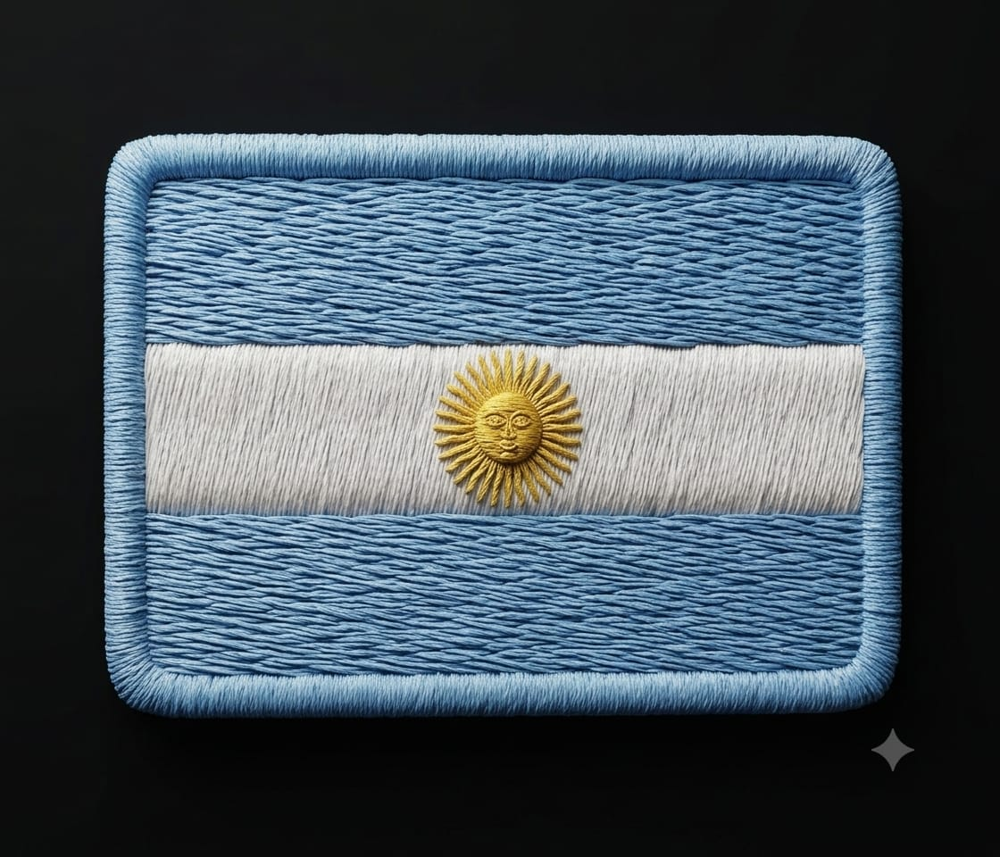

GUMKIDO AMK ⛩️
Velocidad, fuerza, suavidad
GIONES
Tu navegador no soporta el elemento de video.
2. GION AMARILLO GUNDO I GION
Giones
Tu navegador no soporta el elemento de video.
3. GION VERDE GUNDO SAM GION
Giones
Tu navegador no soporta el elemento de video.
4. GION AZUL GUNDO SA GION
Giones
Tu navegador no soporta el elemento de video.
6. GION I DAN GUMKIDO RYUK GION
Giones
TÉCNICAS
Tu navegador no soporta el elemento de video.
4. Tecnica AZUL
Técnicas